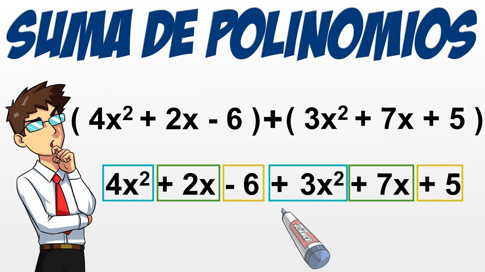
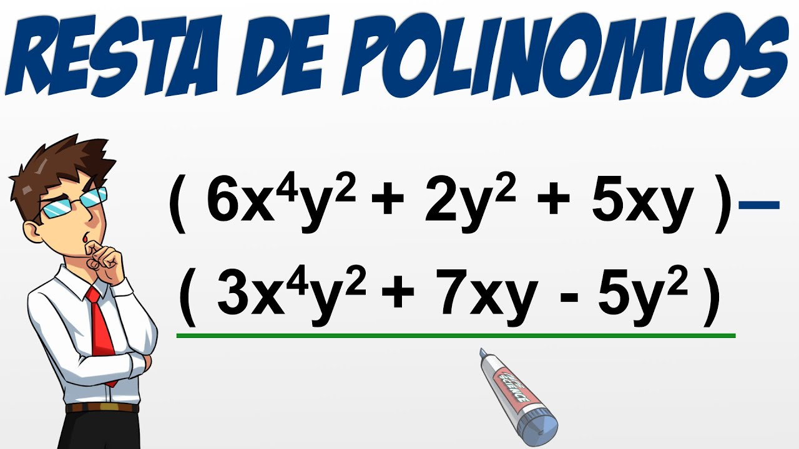
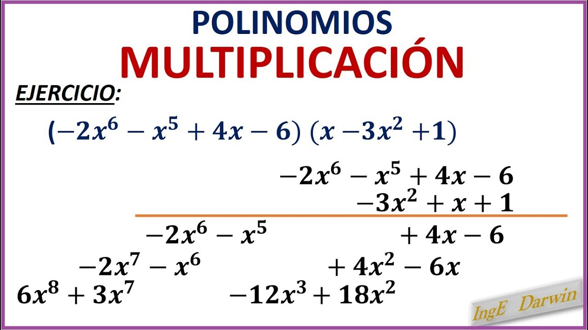
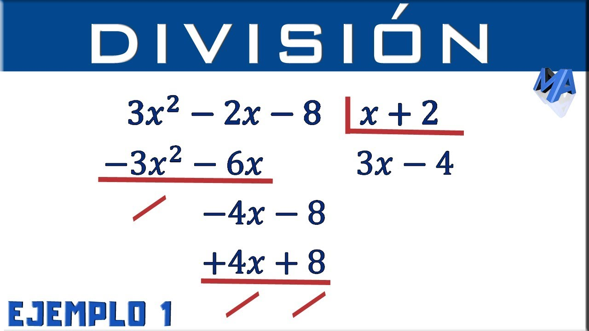

MATEMATICAS
SUMA DE POLINOMIOS
Para sumar dos o más polinomios, debemos sumar los coeficientes de los términos cuya parte literal sean
iguales, es decir, las variables y exponentes (o grados) deben ser los mismos en los términos a sumar.
PASOS
1.En este primer paso debemos organizar los polinomios de mayor a menor.
2.En el segundo hay que agrupar lo polinomios del mismo grado.
3.En este último paso hay que sumar los monomios
EJEMPLO.

En el segundo método también podemos sumar polinomios escribiendo uno debajo del otro, de forma que los
monomios semejantes queden en columnas y se puedan sumar.
Ejemplo del segundo método para sumar polinomios
Sumar los polinomios.
RESTA DE POLINOMIOS
La resta de polinomios consiste en sumar al minuendo el opuesto del sustraendo. También podemos restar
polinomios escribiendo el opuesto de uno debajo del otro, de forma que los monomios semejantes queden en
columnas y se puedan sumar.
Ejemplo de resta de polinomios
Restar los polinomios.

MULTIPLICACION DE POLINOMIOS
1. Multiplicación de un número por un polinomio
La multiplicación de un número por un polinomio es otro polinomio. El polinomio que se obtiene tiene el
mismo grado del polinomio inicial. Los coeficientes del polinomio que resulta, son el producto de los
coeficientes del polinomio inicial, por el número y dejando las mismas partes literales.
2. Multiplicación de un monomio por un polinomio
En la multiplicación de un monomio por un polinomio se multiplica el monomio por todos y cada uno de los
monomios que forman el polinomio.
Recordar que primero debemos multiplicar signos, posteriormente multiplicar los monomios correspondientes,
para lo cual, se debe multiplicar los coeficientes, y luego, realizar la multiplicación de la parte literal,
en donde, al multiplicar variables iguales los exponentes se sumarán.
3. Multiplicación de polinomios
Este tipo de operaciones se puede llevar a cabo de dos formas distintas.
Método 1 para multiplicar polinomios
Pasos:
1 Se multiplica cada monomio del primer polinomio por todos los elementos del segundo polinomio.
2 Se suman los monomios del mismo grado, obteniendo otro polinomio cuyo grado es la suma de los grados de
los polinomios que se multiplican.
Ejemplo:
Multiplicar los siguientes polinomios
1Se multiplica cada monomio del primer polinomio por todos los elementos del segundo polinomio.
2Se suman los monomios del mismo grado.
3Se obtiene otro polinomio cuyo grado es la suma de los grados de los polinomios que se multiplican.
Método 2 para multiplicar polinomios
También podemos multiplicar polinomios escribiendo un polinomio debajo del otro. En cada fila se multiplica
cada uno de los monomios del segundo polinomio por todos los monomios del primer polinomio. Se colocan los
monomios semejantes en la misma columna y posteriormente se suman los monomios semejantes.
Ejemplo:
Como la multiplicación de polinomios cumple la propiedad conmutativa, hemos tomado como polinomio
multiplicador el polinomio más sencillo.

DIVISION DE POLINOMIOS
Abordaremos la explicación con un ejemplo.
Ejemplo:
Resolver la división de los polinomios
P(x) : Q(x)
1A la izquierda situamos el dividendo. Si el polinomio no es completo dejamos huecos en los lugares que
correspondan.
2A la derecha situamos el divisor dentro de una caja.
3Dividimos el primer monomio del dividendo entre el primer monomio del divisor.
4Multiplicamos cada término del polinomio divisor por el resultado anterior y lo restamos del polinomio
dividendo:
5Volvemos a dividir el primer monomio del dividendo entre el primer monomio del divisor. Y el resultado lo
multiplicamos por el divisor y lo restamos al dividendo.
obteniendo
6Procedemos igual que antes. Y esta vez
entonces
7Como en los pasos anteriores, dividimos por , y obtenemos . Multiplicamos por cada término del divisor y
obtenemos:
Procedemos con la resta:

¿QUE SON LOS PRODUCTOS NOTABLES?
Un producto notable es una expresión algebraica que se presenta de manera recurrente y que tiene una forma
específica que facilita su manipulación y cálculo. En el álgebra es común encontrarnos con expresiones
elevadas al cuadrado, al cubo o multiplicadas entre sí.
¿QUÉ PRODUCTOS NOTABLES HAY?
1. Cuadrado de la suma de dos cantidades
Cuando tenemos dos cantidades a y b, cuya suma está elevada al cuadrado, lo que realmente se pide es que se
multiplique la suma por si misma:
Esta multiplicación se efectúa de la siguiente forma:
Regla del cuadrado de la suma de dos cantidades
El cuadrado de la suma de dos cantidades es igual al cuadrado de la primera cantidad, más dos veces la
primera cantidad por la segunda, más el cuadrado de la segunda cantidad.
Representación gráfica del cuadrado de la suma de dos cantidades
El cuadrado de la suma de a y b se representa como un cuadrado compuesto por los cuadrados de a y de b y dos
rectángulos cuyos lados son a y b.
Podemos representar gráficamente el cuadrado de la suma de dos cantidades cuando los valores son positivos.
Así, la suma de dos cantidades positivas al cuadrado será igual a la suma de:
• un cuadrado con sus lados iguales a la primera cantidad;
• un cuadrado con sus lados iguales a la segunda cantidad, y
• dos rectángulos cuyos lados son iguales a la primera y la segundad cantidad.
Como podemos ver, el cuadrado resultante tendrá un área igual a (a+b) por (a+b)= (a+b)2
Ejemplos con solución paso a paso
1) Desarrolle (x+10)2.
• Cuadrado del primer término: x2.
• Dos veces el primero por el segundo: 2(x)(10)=20x.
• Cuadrado del segundo término: 102=100.
Respuesta:
2) Desarrolle (7a2+5x3)2.
• Cuadrado del primer término: 72(a2)2=49a4.
• Dos veces el primero por el segundo: 2(7a2)(5x3)= 70a2x3.
• Cuadrado del segundo término: (5)2(x3)2=25x6.
Respuesta:
2. Cuadrado de la diferencia de dos cantidades
Cuando tenemos dos cantidades a y b, cuya resta está elevada al cuadrado, lo que realmente se pide es que se
multiplique la resta por si misma:
Esta multiplicación se efectúa de la siguiente forma:
Recordemos que dos números negativos cuando se multiplican, el signo resultante es positivo:
Regla del cuadrado de la resta de dos cantidades
El cuadrado de la resta de dos cantidades es igual al cuadrado de la primera cantidad, menos dos veces el
primer término por el segundo término, más el cuadrado de la segunda cantidad.
Ejemplos con solución paso a paso
1) Desarrolle (x-10)2.
• Cuadrado del primer término: x2.
• Menos dos veces el primero por el segundo:- 2(x.10)=-20x.
• Cuadrado del segundo término: 102=100
Respuesta:
2) Desarrolle (7a2-5x3)2.
• Cuadrado del primer término: 72(a2)2=49a4.
• Menos dos veces el primero por el segundo: -2(7a2)(5x3)= -70a2x3.
• Cuadrado del segundo término: (5)2(x3)2=25x6.
Respuesta:
3. Producto de la suma por la diferencia de dos cantidades (binomios conjugados)
En este caso, la multiplicación se realiza de la siguiente forma;
Regla del producto de la suma por la resta de dos cantidades
La suma de dos cantidades multiplicada por su diferencia es igual al cuadrado del minuendo (en la
diferencia) menos el cuadrado del sustraendo.
Ejemplos con solución paso a paso
1) Desarrolle (x+1)(x-1).
• Cuadrado del minuendo: x2.
• Menos el cuadrado del sustraendo: -(12)=-1
Respuesta:
2) Desarrolle (5a+3a2)(3a2-5a).
• Cuadrado del minuendo: (3a2)2=9a4
• Menos el cuadrado del sustraendo: -(52a2)=-25a2
Respuesta:
4. Caso especial multiplicación de trinomios (a+b+c)(a+b-c)
Este producto lo podemos transformar en la suma de dos cantidades multiplicada por su diferencia:
Regla del caso especial de la multiplicación de trinomios
La multiplicación de dos trinomios con dos términos positivos iguales, y un tercer término cuyo signo
difiere en cada trinomio es el cuadrado del primer término, más dos veces el primero por el segundo, más el
cuadrado del segundo término, menos el cuadrado del tercero.
Ejemplos de multiplicación de trinomios
1) Desarrolle (x+y-2)(x+y+2).
2) Desarrolle (a2-2a+3)(a2+2a+3).
5. Caso especial multiplicación de trinomios (a+b+c)(a-b-c)
En este caso se realiza lo siguiente:
• los términos negativos del trinomio se agrupan en paréntesis con el signo negativo delante, por lo que
estos términos negativos pasan a ser positivos.
• Luego en el trinomio de las sumas se agrupan los mismos términos.
Esto queda de la siguiente forma:
Ahora se puede desarrollar como un producto de la suma por la resta de dos cantidades:
Regla del caso especial de la multiplicación de trinomios
La multiplicación de dos trinomios con un término positivo igual, y los otros dos términos iguales en valor
absoluto, pero con signos diferentes en cada trinomio es el cuadrado del primer término, menos el cuadrado
del segundo término, menos dos veces el primero por el segundo, menos el cuadrado del tercero.
Ejemplos de multiplicación de trinomios con números negativos
1) Desarrolle (x+y+z)(x-y-z).
2) Desarrolle (x3-x2-x)(x3+x2+x).
6. Cubo de la suma de dos cantidades
En el cubo de un binomio tenemos lo siguiente:
Podemos desarrollar el cuadrado de la suma y luego multiplicarlo por (a+b):
Regla del cubo de la suma de un binomio
El cubo de la suma de dos cantidades es igual al cubo de la primera cantidad, más 3 seguido del cuadrado del
primero por el segundo, más 3 seguido del primero por el cuadrado del Segundo, más el cubo del segundo.
ESTOS FUERON ALGUNOS CASOS Y EJEMPLOS DE PRODUCTOS NOTABLES QUE HAY